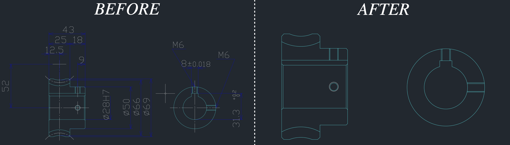

Generative Gear Design
This is an ongoing personal project. The goal is to fine-tune an open source large language model which is capable of automatically generating a DXF file of a gear.Check out the GitHub repository for this project here.
So far
After scraping 11,000 data samples from KHK Gears I am now in the fine tuning stage.Each gear in the KHK collection contains quantitative specifications about its geometric construction; information which nearly uniquely determines each gear. Along with this information is a downloadable DXF document of the associated gear. I scraped all of this information utilizing the BeautifulSoup and Selenium libraries.
One massive (literally) issue: The DXF files contain a massive amount of text -- a corpus long enough to exceed the context window of open source models that I (my hardware) am capable of running, let alone training.
Upshot: Most of the information in the DXF files are common between different gears and/or could be easily reconstructed algorithmically following generation of the unique information; the actual gear.
Solution: I automated the scraping of all the DXF files in my dataset so that the resulting data contained only the essential information. See the following image as an example for a two-dimensional profile:

Each DXF file in the original dataset contained, on average, 2665 lines. This was reduced to an average of 965 lines; a compression rate of nearly 65%. This is computed explicitly in the Github Repository.
Check back soon for more progress!